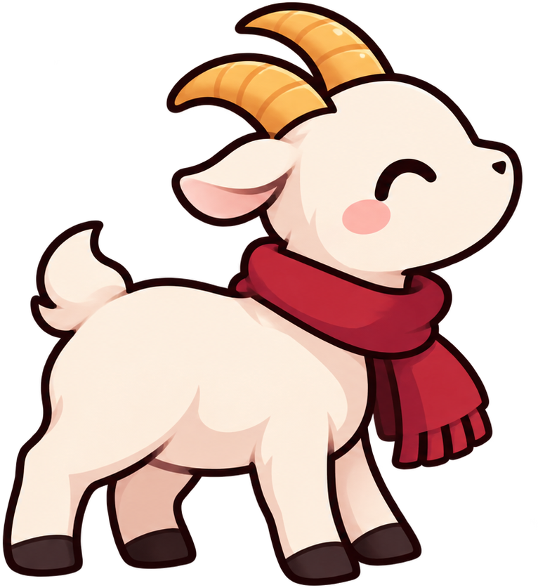
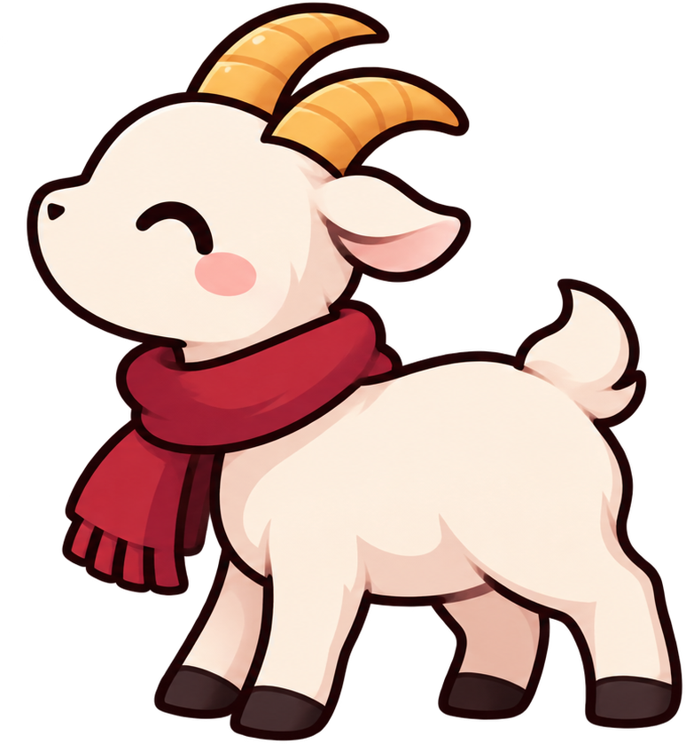

Стихия года. Коза считается мягкой и творческой, а Огонь добавляет ей упрямства и энергии.

2027
ГОД ОГНЕННОЙ КОЗЫ
Новогодняя система запущена. Вас ждут огонь, удача и немного цифрового безумия.
[ СКОЛЬКО ОСТАЛООСЬ ДО НОВОГО ГОДА? ]
ДО 2027 ОСТАЛОСЬ
00
ДНЕЙ
00
ЧАСОВ
00
МИНУТ
00
СЕКУНД

✦ ✦ ✦
ЧТО ЗА ГОД ТАКОЙ?
Такое сочетание повторяется раз в 60 лет. Прошлая Огненная Коза была в 1967-м, следующая будет в 2087-м.
В этот день год Козы начнётся по восточному календарю. До него ещё идёт год Огненной Лошади.
✦ ✦ ✦
НАЧАТЬ ПРИКЛЮЧЕНИЕ →